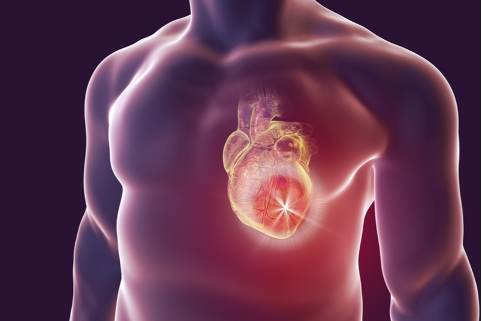

Hypertension can be defeated!
Scientists have found a way to protect humanity from one of the main causes of death caused by a problem with blood vessels.
If you are over 40 and have never cleaned your blood vessels, there is a 27% chance you will die of a stroke or heart disease. But this terrible fate can be avoided.
Answer these 4 questions:
- Have you been diagnosed with a heart problem?
- Have you been diagnosed with type 2 diabetes?
- Are you suffering from high blood pressure and high blood sugar?
- Are you overweight?
If you answered yes to ANY of these questions, you are at risk and need urgent help.
What you need to do - read on.
Well-known Canadian physician who is the Provincial Health Officer for British Columbia, a famous Dr Bonnie Henry.
If everything is fine with pressure and blood vessels in general, you can live 120 years or more. And feel completely healthy. Dr. Henry fully confirmed this statement and told our reporter about the secret of a long and healthy life.
- Dr. Henry, you have often said that blood balance is the foundation of health. What do you mean?
Dr. Henry: It's simple. In childhood and adolescence, our vessels are elastic and clean, so the nutrition of the organs is maximum. Much changes with age. There is much more bad cholesterol, and the percentage of good cholesterol decreases.
All these slags our vessels, they become "dirty". The blood balance is disturbed.

- What is cholesterol?
Dr. Henry: This is a fatty substance that enters the vessels in two ways. We get about a quarter of cholesterol from food, and the other three quarters are produced by the body itself.
Cholesterol plaques lead to headaches, joint problems, high blood pressure, and other health problems. By disrupting blood circulation, they contribute to the formation of blood clots and thrombotic masses. And this is a direct and real threat to life.
- What are thrombotic masses?
Dr. Henry: This is a collection of blood clots in one place or even along the entire length of a vein. The danger is that they are unstable. They can break off at any time and lead to dire consequences.
If a blood clot blocks a vessel in your brain, a stroke occurs. If it blocks a heart artery, it's a heart attack.
Any other organ also runs the risk of being left without blood supply, then lung collapse, kidney failure, gangrene and many other health hazards may occur.
- What do you mean "dirty" blood vessels?
Dr. Henry: Imagine pipes full of rust. What's happening? The water pressure increases, the pressure in the system increases.
It's the same with the blood vessels. When cholesterol or other substances are deposited on them, pressure increases (dirty vessels are the main cause of hypertension), blood contains impurities, blood circulation is impaired.

To make it clearer, imagine that the normal lumen of the vessels has the diameter of the wrist. With age, this gap narrows to the diameter of the little finger. Of course, this cannot but affect your health, because it depends by 90% on the state of blood vessels.
Therefore, it is so important to restore blood balance as soon as possible.
Vessels get dirty quickly
The saddest thing is that blood vessels get dirty very quickly, especially in the elderly. You don't have to eat hamburgers or fries all day. A piece of sausage or a fried egg is enough for some of the resulting cholesterol to be deposited on the walls of blood vessels.
Over the years, this pollution accumulates.
- Dr. Henry, if I understand correctly, blood vessels are 90% responsible for the health of the body. Why is this so?
Dr. Henry: Blood vessels are not just tubes. It is a complex single organ, the destruction of which immediately ends in suffering.
Suffering can take many forms.
- Leg pain - varicose veins, swelling and an everlasting feeling of heaviness in the legs, cold or unpleasant burning.
- A blockage in the blood vessels means that the liver is poorly nourished, which then develops into hepatitis. Bitter taste in the mouth. After eating fatty foods - heartburn and belching.
- Weak and dirty articular vessels - dry cartilage. There are joint pains, insurmountable osteochondrosis, hernias appear.
- Anal vessels are weakened - hemorrhoids are aggravated by bumps.
- Vessels of the eye - vision deteriorates. Cataracts develop. The redness of the eyes, which we often attribute to fatigue, is actually microbleeds - the rupture of tiny eye capillaries.
- Blood circulation in the brain becomes difficult - dizziness, tinnitus and poor memory appear.
And, of course, the most common problem of vascular diseases is hypertension. And hypertension in its turn leads to stroke or heart attack.
Hypertension Diagnosis? This means that the vessels are screaming: "Cleanse us!"
Your vessels need urgent cleaning if ...
- Doctor, let's clearly state the symptom, which give us an unambiguous signal that the vessels need to be cleaned.
Dr. Henry: Major symptoms include:
- High blood pressure
- Migraine
- Memory impairment
- Chronic fatigue
- Insomnia
- Intimate problems
- Visual and hearing impairment
- Shortness of breath and angina
- Pale skin on arms and legs
- Muscle and joint pain
If you have AT LEAST ONE of these symptoms, you need urgent help.
It is important to understand that any of these symptoms can get worse at any time. And then, instead of simple cleaning of blood vessels, you will have to pay a lot of money for operations.
But I am ready to state the following. Regardless of whether you have one of these symptoms or not, after 35 years of age, it is necessary to restore blood balance at least once every 5 years. This way you will have good health.

Excess weight is caused by bad blood vessels and hypertension
- I read that excess weight can also be caused by poor vascular health, but I don't really understand the relationship.
Dr. Henry: Being overweight is closely related to blockage of blood vessels. Vessels clogged with cholesterol cause starvation of all organs, blood vessels cannot provide them with the necessary amount of nutrients. This is why the brain sends signals to eat. And we eat. But the body still needs more food, because it is not saturated, nutrition simply does not reach it. The brain orders to eat something again. And over and over again.
That's why we need snacks, we crave sweet and fatty foods - the body needs calories.
When my colleagues tell patients, “You have high blood pressure due to being overweight,” they mistakenly confuse cause and effect. Hypertension is not caused by being overweight. Being overweight is caused by hypertension. More precisely, a problem with blood vessels.
Let me say one more thing. This concerns all of us and seems extremely important to me. It is about strengthening blood vessels during the Covid pandemic.
It is known that the virus affects the vessels, they suffer the most. And the vessels in their turn affect the whole body. I appeal to everyone who has already been ill with Covid as well as to those who are afraid of getting infected. Be sure to prioritize vascular health. During the pandemic, this is the weakest point that needs to be protected first.
How to restore blood balance
- Please tell us about your secret to restoring blood balance.
Dr. Henry: Until recently, the process of cleansing blood vessels was extremely difficult. If you do not take surgical methods, the vessels could be cleaned using a complex of special potent drugs. At an extremely high price, they did not guarantee the effect, since an individual selection of components was required for each patient.
Now this is not necessary, since my colleagues from the Institute of Cardiovascular Diseases have created a good and cheap remedy, which they called BLOOD BALANCE
The drug regulates blood pressure, controls blood sugar levels, treats hypertension, and helps to reduce weight. Therefore, it is perfect for our purposes.
GET YOUR BOTTLEI emphasize that this product does not contain chemicals, but only concentrated extracts of medicinal herbs such as white mulberry leaf, berberine extract, juniper berries, melon extract, cinnamon bark powder, and Biotin + Chromium.
A mixture of herbal extracts literally sweeps away all waste from veins, arteries and small capillaries. It removes cholesterol, blood clots and calcium deposits - anything that interferes with the free flow of blood in your body.
No medicine can clear blood vessels that have been blocked for decades faster than Blood Balance. Just 1-2 months are enough.
Blood Balance has no side effects, unlike 99% of other products. And the effect of these capsules can only be compared with surgery.
In the first month, Blood Balance will cleanse your blood vessels by about 70%.

And this is what it leads to.
- Headaches disappear, tinnitus subsides. The brain, fully feeding from its own vessels, works at the speed of a supercomputer. Thoughts become clear.
- Hearing sharpens. You can better distinguish between smells. You can discern subtle differences in taste that you didn't notice before.
- Appetite returns to normal as excess weight disappears. Allergies go away, and fresh air, filling the lungs, spreads through the body in pleasant waves, causing slight euphoria.
- Varicose veins, osteochondrosis, hemorrhoids, liver problems, brain problems - all these diseases will leave you.
- Your body will be like a car in which you replaced old equipment with new ones: the shaking and clicking stops, the car runs smoothly and will last for many years.
It is a shame that so few people know about this remedy.
Blood Balance is considered the preferred treatment in Japan and Israel, but unfortunately in our country we choose the more aggressive methods with many side effects. This is due to the poor awareness of patients and doctors.
Most of my former patients continue to ask my advice on how to restore blood balance. Lately I have only recommended this product to them. It is very effective.
The website of the Institute of Cardiovascular Diseases provides official statistics of clinical trials. About 2 thousand patients took part in them, and all of them underwent treatment with Blood Balance capsules.

Research results:
- Normalization of blood pressure 1-2 days after taking the medication - 2 capsules after meals - in 99% of cases.
- Normalization of blood sugar after the end of treatment - 97% of cases.
- Complete cleansing of blood vessels from cholesterol after treatment - 99% of patients.
- Weight loss - 99% of patients.
- Improving overall health - 100% of patients.
- No adverse reactions during treatment - 100% of patients.
- How much do Blood Balance capsules cost and where can you buy them?
Dr. Henry: You know, the pension people get doesn't allow them to buy expensive remedies. I couldn't recommend an expensive remedy. Blood Balance capsules are inexpensive and there is an offer right now - BEFORE March 14, 2021
As a result, anyone can buy capsules with a 50% discount.
To order Blood Balance capsules you need:
- Fill out the form on the official website.
- The manager will contact you to confirm the delivery address.
- After 4-7 days (delivery time), you will receive Blood Balance capsules by mail.
To maintain the positive effect of the drug, I recommend repeating the course every 1-2 years. Especially for the elderly. This will help you improve your health and delay the signs of aging.
GET YOUR BOTTLE

Yes, in the times of a covid pandemic, vascular protection in general seems to me the most important thing in the world. I was ill and it was very difficult. If there is the slightest chance to feel better - we shouldn't miss that chance.

The supplement is very effective! I bet! I had a blood pressure of 140/90 for many years. After treatment, the pressure returned to 125/80. I feel great!

I have read all the information about Blood Balance capsules on their website. Amazing and impressive!

I also see a lot of benefit from this proposal! Thank!
I have been taking this drug for almost a month (intermittently). I'm better. I am very active; I have strengthened the immune system. I feel 10 years younger. I am 72 years old.

Two months ago, I also underwent a cleansing procedure with Blood Balance capsules. Blood sugar returned to normal, blood pressure too. But I haven't managed to noticeably lose weight yet, in two months I have lost only 12 kg. This is not enough for me.

Thanks for this remedy. Also, thanks for such a generous price offer, this is also very important. I'm ordering right now.
I also ordered now, while there is such an opportunity.

Me, I received Blood Balance two weeks ago and I've started taking it. I must say right away that blood sugar is still far from normal, but it has already significantly decreased. So did the pressure. I think this is a great success.

I bought it for my mom. Elderly people especially need this drug. I will take it myself, although I am only 36 years old. But prevention is a good idea.

I will definitely buy myself and my husband to protect ourselves from covid. Thank!

Of course, it will do good, it is always easier and cheaper to prevent diseases than to cure. I ordered for myself and for my husband, we both have high sugar, the upper limit of the norm. A little more and it will be too high.

Thank you for the fast delivery, I have already received your product, I'm here to thank you. All the best to you.
I ordered it. I am glad that I managed to order it with a special price.

I heard about this drug, but I ordered it on another site and received a fake. Watch out, there are a lot of fakes, order only here from trusted suppliers. The second time I bought it here and everything is fine.

I also lost weight thanks to this drug. And I think that 12 kg is an excellent result. Especially when that blood pressure and sugar levels returned to normal. Blood Balance is working!

I am a simple woman and I am very glad that the creators of the drug are not chasing profit at any cost and are selling the drug so cheaply. Other drugs are very expensive and not always covered by insurance. Thank you.
With files from Sean Henry and Radio-Canada